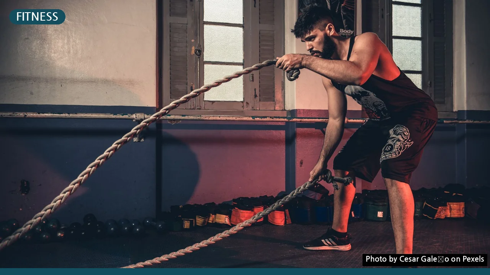
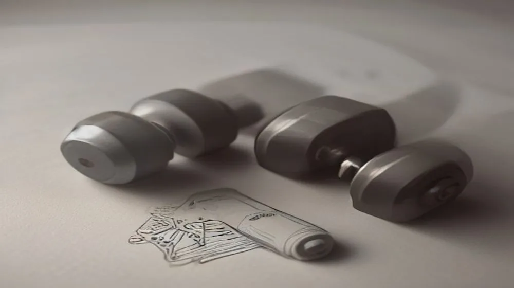

AIG 여자오픈, 골프 팬들을 충격에 빠뜨린 의외의 반전 드라마! 그 승자는?
사진: Cesar Galeão / Pexels (무료 이미지, 출처 표기)
혹시 AIG 여자오픈에 대해 들어보셨나요? 평범해 보이던 이 단어가 오늘 대한민국 인터넷을 발칵 뒤집어 놓았습니다. 과연 그 이면에는 어떤 사연이 숨어 있을까요?

혹시 어제 저녁, 혹은 오늘 아침 뉴스에서 'AIG 여자오픈'이라는 단어를 보시고 고개를 갸웃하셨나요? 평소 골프를 즐겨 보지 않으셨다면 '또 어떤 대회가 끝났나 보네' 하고 지나치셨을 수도 있습니다. 하지만 잠시만요! 이번 AIG 여자오픈은 단순한 스포츠 이벤트가 아니었습니다. 전 세계 골프 팬들을 열광시키고, 심지어는 뜨거운 논쟁까지 불러일으킨 '이변의 연속'이었거든요. 대체 어떤 드라마가 펼쳐졌기에 이토록 뜨거운 검색어로 떠오른 걸까요? 그 숨겨진 이야기에 지금 바로 귀 기울여보시죠!
전 세계가 숨죽인 AIG 여자오픈, 그 특별함은?
AIG 여자오픈은 LPGA 투어 5대 메이저 대회 중 하나이자, 유일하게 유럽에서 열리는 메이저 대회입니다. 그 권위와 역사만큼이나 매년 수많은 스타 선수들의 격전지로 손꼽히죠. 특히, 영국의 스코틀랜드나 잉글랜드 등 골프의 본고장에서 열리기 때문에 코스 자체가 갖는 역사적 의미와 난이도가 남다릅니다. 거친 바람, 깊은 러프, 그리고 예측 불가능한 날씨는 선수들에게 끊임없이 도전장을 내밀죠. 이러한 조건 속에서 누가 '진정한 챔피언'의 자리에 오를지 전 세계의 이목이 집중되는 것은 어찌 보면 당연한 일입니다.
그런데 올해 AIG 여자오픈은 단순한 메이저 대회의 위상을 넘어섰습니다. 매 라운드마다 드라마틱한 순위 변동과 예측 불허의 승부가 이어지면서, '역시 골프는 마지막 홀까지 알 수 없다'는 명언을 다시 한번 증명했으니까요. 대체 누가 이 파란만장한 승부의 주인공이 되었을까요?
예측불허의 승부, 골프 역사를 새로 쓴 기적의 주인공은?
이번 AIG 여자오픈이 뜨거운 화제가 된 가장 큰 이유는 바로 '예상 밖의 우승자 탄생' 때문이었습니다. 수많은 톱 랭커들과 LPGA 스타 플레이어들을 제치고, 이름조차 생소했던 한 선수가 마지막 라운드에서 무서운 집중력을 발휘하며 기적 같은 역전 우승을 차지한 것이죠. 그녀의 플레이는 마치 한 편의 영화 같았습니다. 마지막 홀까지 손에 땀을 쥐게 하는 접전 끝에 모두의 예상을 뒤엎고 트로피를 들어 올리는 순간, 현지 갤러리는 물론 전 세계 골프 팬들이 뜨거운 환호와 함께 깊은 감동을 느꼈습니다. '이름값이 아닌 실력으로 증명하는 무대'라는 골프의 진정한 가치를 보여준 순간이었습니다.
그녀의 우승은 단순히 한 명의 선수가 트로피를 차지한 것을 넘어, '누구에게나 기회는 열려 있다'는 희망의 메시지를 전하며 전 세계인의 가슴을 울렸습니다. 언더독의 반란은 언제나 사람들의 열광을 불러일으키기 마련이니까요.
한국 선수들의 '뜨거운 투혼': 아쉬움 속 빛난 가능성
이번 AIG 여자오픈에서는 한국 선수들의 활약 또한 빼놓을 수 없는 관전 포인트였습니다. 비록 우승컵을 들어 올리지는 못했지만, 끝까지 포기하지 않는 뜨거운 투혼으로 많은 팬들에게 깊은 인상을 남겼습니다. 특히 몇몇 선수들은 마지막 라운드까지 우승 경쟁을 벌이며 대한민국 골프의 저력을 여실히 보여주었죠. 아쉽게 준우승이나 아깝게 톱10에 그친 선수들의 모습에서는 '다음에는 반드시 우승하겠다'는 강한 의지가 엿보였습니다.
그들의 플레이는 매번 변하는 영국 특유의 변덕스러운 날씨와 까다로운 코스 세팅 속에서도 흔들림 없는 집중력과 뛰어난 위기관리 능력을 선보였습니다. 이는 한국 여자골프가 세계 최고 수준임을 다시 한번 입증하는 계기가 되었으며, 앞으로도 더 큰 무대에서 활약할 한국 선수들에 대한 기대감을 한껏 높였습니다.
그린 위 감동 뒤 숨겨진 이야기: 멘탈 스포츠의 진수
골프는 신체적인 능력뿐 아니라 극한의 정신력을 요구하는 스포츠입니다. 특히 메이저 대회에서는 한 타 한 타에 천문학적인 상금과 명예가 걸려 있기에 선수들의 심리적 압박은 상상을 초월하죠. 이번 AIG 여자오픈에서도 이러한 멘탈 게임의 진수가 여과 없이 드러났습니다. 선두를 달리던 선수가 중요한 순간에 실수를 범하며 무너지고, 반대로 뒤쫓아가던 선수가 과감한 플레이로 분위기를 뒤집는 장면들이 속출했습니다.
우승자의 감동적인 스토리는 물론, 아쉽게 눈물을 삼킨 선수들의 인터뷰 역시 많은 이들에게 깊은 공감을 안겨주었습니다. 그들의 솔직한 고백 속에는 단순한 스포츠 경기를 넘어, 인생의 희로애락이 담겨 있었기 때문입니다. 이처럼 AIG 여자오픈은 단순히 스코어를 다투는 대회를 넘어, 인간 한계를 시험하고 극복하는 선수들의 진솔한 이야기가 담긴 무대였습니다.
AIG 여자오픈이 던진 질문: 변화하는 골프계의 미래
이번 AIG 여자오픈은 단순히 한 대회의 기록을 넘어, 미래 골프계에 여러 질문을 던지고 있습니다. 새로운 스타의 탄생은 골프 팬층을 더욱 넓히는 계기가 될 것이며, 예측 불가능한 승부는 앞으로의 대회에 대한 기대감을 더욱 증폭시킬 것입니다. 또한, 여성 골프에 대한 전 세계적인 관심이 높아지면서 스폰서십과 상금 규모에도 긍정적인 영향을 미칠 것으로 예상됩니다.
이번 대회를 통해 우리는 골프가 끊임없이 진화하고 있으며, 언제나 새로운 영웅과 스토리를 만들어낸다는 사실을 다시 한번 확인했습니다. 다가오는 다음 메이저 대회에서는 또 어떤 놀라운 일이 우리를 기다리고 있을지, 벌써부터 가슴이 설렙니다.
- 깜짝 우승 신데렐라 탄생: 무명 선수의 역사적인 역전 우승으로 전 세계 골프팬들에게 충격과 감동 선사.
- 한국 선수들의 맹추격: 마지막까지 우승 경쟁을 벌이며 대한민국 골프의 저력을 과시, 다음을 기약하는 인상적인 활약.
- 변덕스러운 영국 날씨: 강한 바람과 비를 뚫고 펼쳐진 인간 한계 초월의 샷들이 승부의 변수로 작용.
- 드라마틱한 명승부: 마지막 홀까지 예측 불가능했던 스코어 변동, 손에 땀을 쥐게 하는 명장면 속출.
🔗 이 글도 함께 보면 좋아요: 조혜련, 갑자기 왜 난리일까? 베테랑 방송인의 놀라운 반전 매력
관련 추천 상품
이 포스팅은 쿠팡 파트너스 활동의 일환으로, 이에 따른 일정액의 수수료를 제공받습니다.